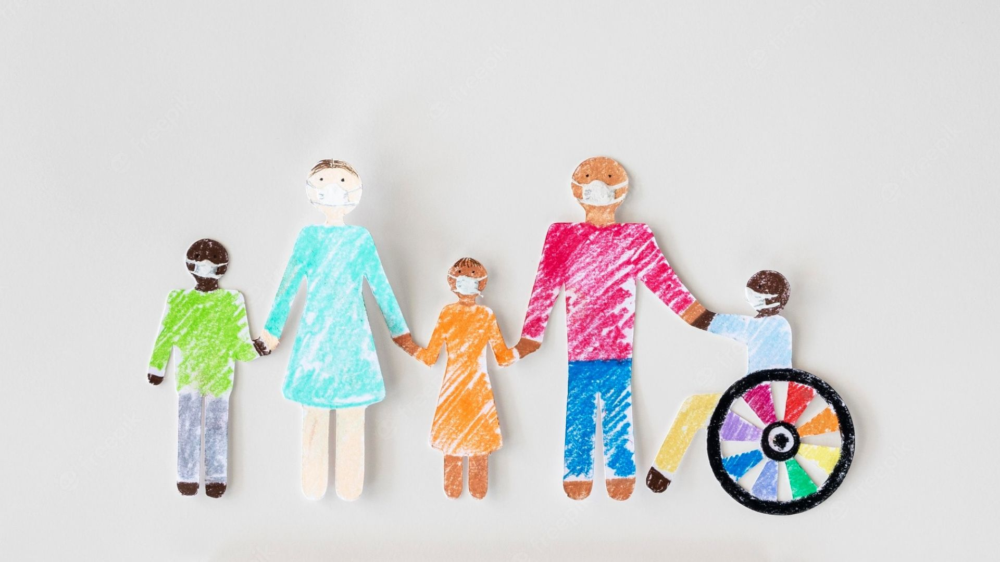

Innovación en moda ajustable para todas las etapas de la vida.
Explorar ProductosProporcionar soluciones prácticas y estilosas para personas en constante cambio físico o con necesidades especiales. Diseñamos ropa inclusiva para garantizar que todos puedan vestirse cómodamente y con confianza.
Ropa con tejidos elásticos y resistentes, ideal para el crecimiento o cambios corporales. Perfecto para niños o personas en recuperación física.
Diseños intuitivos y fáciles de usar para personas con movilidad reducida. Incluyen cierres magnéticos y tejidos suaves para pieles sensibles.
Prendas adaptadas para dispositivos médicos como prótesis, catéteres o vendajes, garantizando funcionalidad y comodidad.
Impacto Social
Por cada compra, apoyamos proyectos sociales que proporcionan ropa inclusiva a personas con necesidades especiales o recursos limitados.